7 Modelowanie autokorelacji przestrzennej
Odtworzenie obliczeń z tego rozdziału wymaga załączenia poniższych pakietów oraz wczytania poniższych danych:
7.1 Modelowanie matematycznie autokorelacji przestrzennej
7.1.1 Modelowanie struktury przestrzennej
Semiwariogram empiryczny (wyliczony z danych punktowych) jest:
- Nieciągły - wartości semiwariancji są średnimi przedziałowymi.
- Chaotyczny - badana próba jest jedynie przybliżeniem rzeczywistości, dodatkowo obciążonym błędami.
Estymacje i symulacje przestrzenne wymagają modelu struktury przestrzennej analizowanej cechy, a nie tylko wartości empirycznych. Dodatkowo, matematycznie modelowanie wygładza chaotyczne fluktuacje danych empirycznych (rycina 7.1).
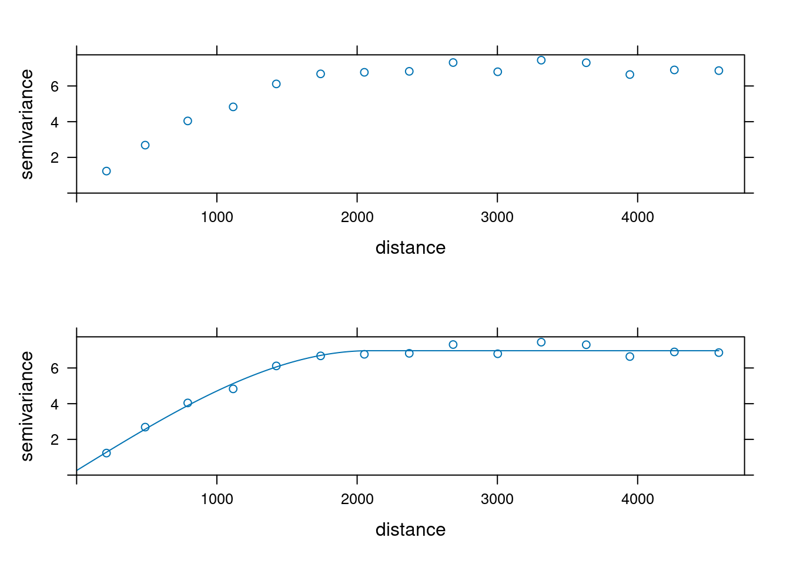
Rycina 7.1: Porównanie semiwariogramu empirycznego i modelu semiwariogramu.
7.1.2 Model semiwariogramu
Model semiwariogramu składa się zazwyczaj z trzech podstawowych elementów (rycina 7.2). Są to:
- Nugget - efekt nuggetowy - pozwala na określenie błędu w danych wejściowych oraz zmienności na dystansie krótszym niż pierwszy odstęp.
- Sill - semiwariancja progowa - oznacza wariancję badanej zmiennej.
- Range - zasięg - to odległość do której istnieje przestrzenna korelacja.
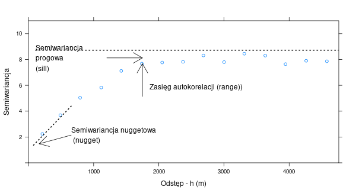
Rycina 7.2: Podstawowe elementy modelu semiwariogramu.
7.1.3 Model nuggetowy
Model nuggetowy określa sytuację, w której analizowana zmienna nie wykazuje autokorelacji. Inaczej mówiąc, niepodobieństwo jej wartości nie wzrasta wraz z odległością. Model nuggetowy nie powinien być używany samodzielnie - w większości zastosowań jest on elementem modelu złożonego. Służy on do określania, między innymi, błędu pomiarowego czy zmienności na krótkich odstępach.
7.2 Modele podstawowe
7.2.1 Typy modeli podstawowych
Pakiet gstat zawiera 20 podstawowych modeli geostatystycznych, w tym najczęściej używane takie jak:
- Nuggetowy (ang. Nugget effect model)
- Sferyczny (ang. Spherical model)
- Gaussowski (ang. Gaussian model)
- Potęgowy (ang. Power model)
- Wykładniczy (ang. Exponential model)
- Inne
Do wyświetlenia listy nazw modeli i ich skrótów służy funkcja vgm().
vgm()## short long
## 1 Nug Nug (nugget)
## 2 Exp Exp (exponential)
## 3 Sph Sph (spherical)
## 4 Gau Gau (gaussian)
## 5 Exc Exclass (Exponential class/stable)
## 6 Mat Mat (Matern)
## 7 Ste Mat (Matern, M. Stein's parameterization)
## 8 Cir Cir (circular)
## 9 Lin Lin (linear)
## 10 Bes Bes (bessel)
## 11 Pen Pen (pentaspherical)
## 12 Per Per (periodic)
## 13 Wav Wav (wave)
## 14 Hol Hol (hole)
## 15 Log Log (logarithmic)
## 16 Pow Pow (power)
## 17 Spl Spl (spline)
## 18 Leg Leg (Legendre)
## 19 Err Err (Measurement error)
## 20 Int Int (Intercept)Można się również im przyjrzeć używając funkcji show.vgms() (rycina 7.3).
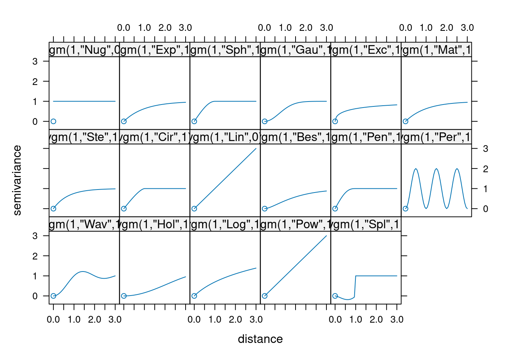
Rycina 7.3: Przykład modeli semiwariogramu dostępnych w pakiecie gstat.
Istnieje możliwość wyświetlenia tylko wybranych modeli podstawowych poprzez argument models (rycina 7.4).
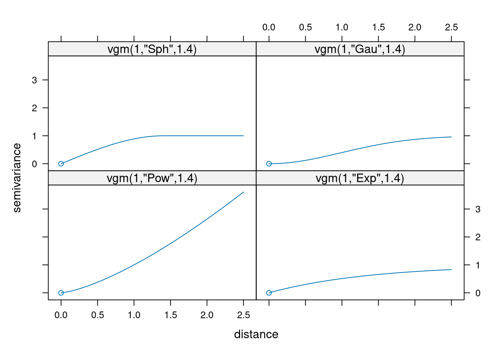
Rycina 7.4: Porównanie modeli sferycznego (Sph), gaussowskiego (Gau), potęgowego (Pow) i wykładniczego (Exp).
Dodatkowo, można je porównać na jednym wykresie poprzez argument as.groups = TRUE (rycina 7.5).
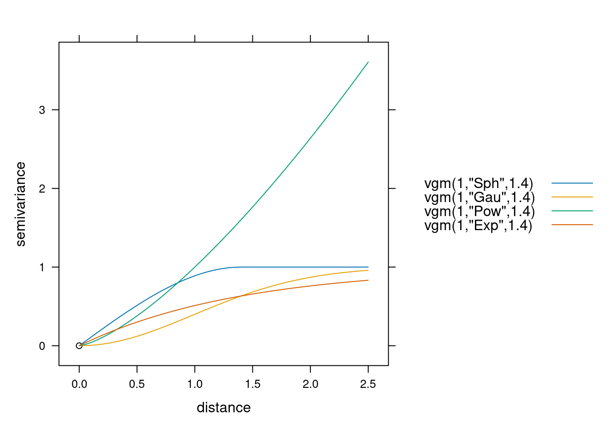
Rycina 7.5: Porównanie modeli sferycznego (Sph), gaussowskiego (Gau), potęgowego (Pow) i wykładniczego (Exp) na jednym wykresie.
7.3 Metody modelowania
7.3.1 Rodzaje metod modelowania
Istnieją trzy najczęściej spotykane metody modelowania geostatystycznego:
- Ustawianie “ręczne” parametrów modelu, np. funkcja
vgm()z pakietu gstat. - Ustawianie “wizualne” parametrów modelu, np. funkcja
eyefit()z pakietu geoR. - Automatyczny wybór parametrów na podstawie różnych kryteriów statystycznych, np. funkcja
fit.variogram()z pakietu gstat,variofit()z pakietu geoR,autofitVariogram()z pakietu automap.
Odpowiednie określenie modelu matematycznego często nie jest proste. W efekcie automatyczne metody nie zawsze są w stanie dać lepszy wynik od modelowania “ręcznego”. Najlepiej, gdy wybór modelu oparty jest o wiedzę na temat zakładanego procesu przestrzennego.
7.3.2 Funkcja fit.variogram()
Funkcja fit.variogram() z pakietu gstat dopasowuje zasięg oraz semiwariancję progową w oparciu o ustalone “ręcznie” wejściowe parametry modelu3.
7.4 Modelowanie izotropowe
Do zbudowania modelu semiwariogramu należy wykonać szereg kroków:
- Stworzyć i wyświetlić semiwariogram empiryczny analizowanej zmiennej z użyciem funkcji
variogram()orazplot(). - Zdefiniować wejściowe parametry semiwariogramu.
W najprostszej sytuacji wystarczy zdefiniować używany model/e poprzez skróconą nazwę używanej funkcji (
model). Możliwe, ale nie wymagane jest także określenie wejściowej semiwariancji cząstkowej (psill) oraz zasięgu modelu (range) w funkcjivgm(). Uzyskany model można przedstawić w funkcjiplot()podając nazwę obiektu zawierającego semiwariogram empiryczny oraz obiektu zawierającego model. - Dopasować parametry modelu używając funkcji
fit.variogram(). To dopasowanie można również zwizualizować używając funkcjiplot().
7.4.1 Model sferyczny
Model sferyczny (Sph) jest jednym z najczęściej stosowanych modeli geostatystycznych.
Reprezentuje on cechę, której zmienność wartości ma charakter naprzemiennych płatów niskich i wysokich wartości (rycina 7.6).
Średnio te płaty mają średnicę określoną przez zasięg (range) modelu.
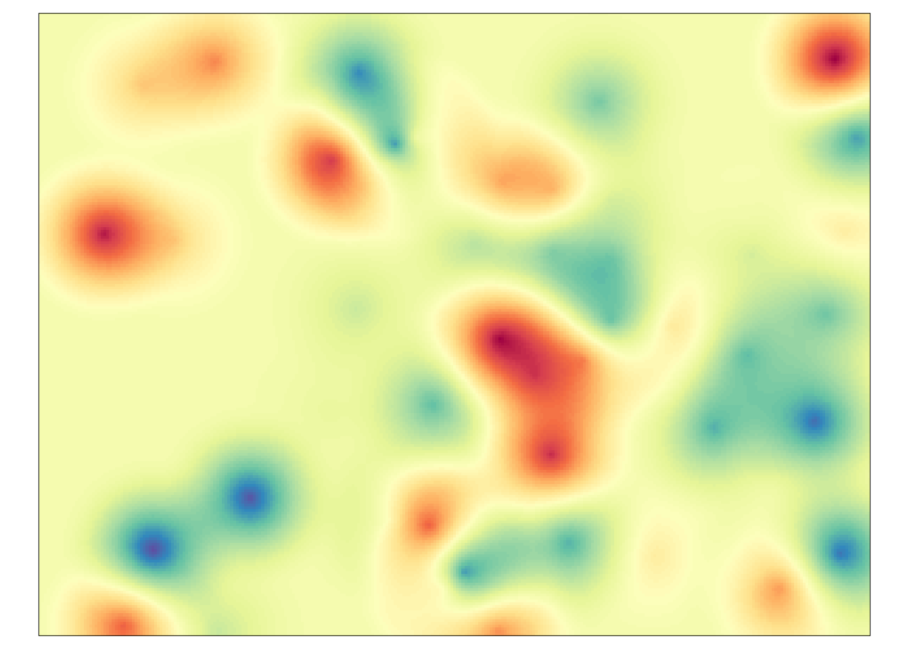
Rycina 7.6: Przykład zjawiska reprezentowanego poprzez model sferyczny.
Stworzenie takiego modelu dla zmiennej temp polega najpierw na zbudowaniu semiwariogramu empirycznego używając funkcji variogram() (rycina 7.7).

Rycina 7.7: Semiwariogram zmiennej temp.
W kolejnym kroku, przy użyciu funkcji vgm() określa się typ modelu oraz jego podstawowe parametry (rycina 7.8).
model_sph = vgm(psill = 10, model = "Sph", range = 3000)
model_sph## model psill range
## 1 Sph 10 3000
plot(vario, model = model_sph)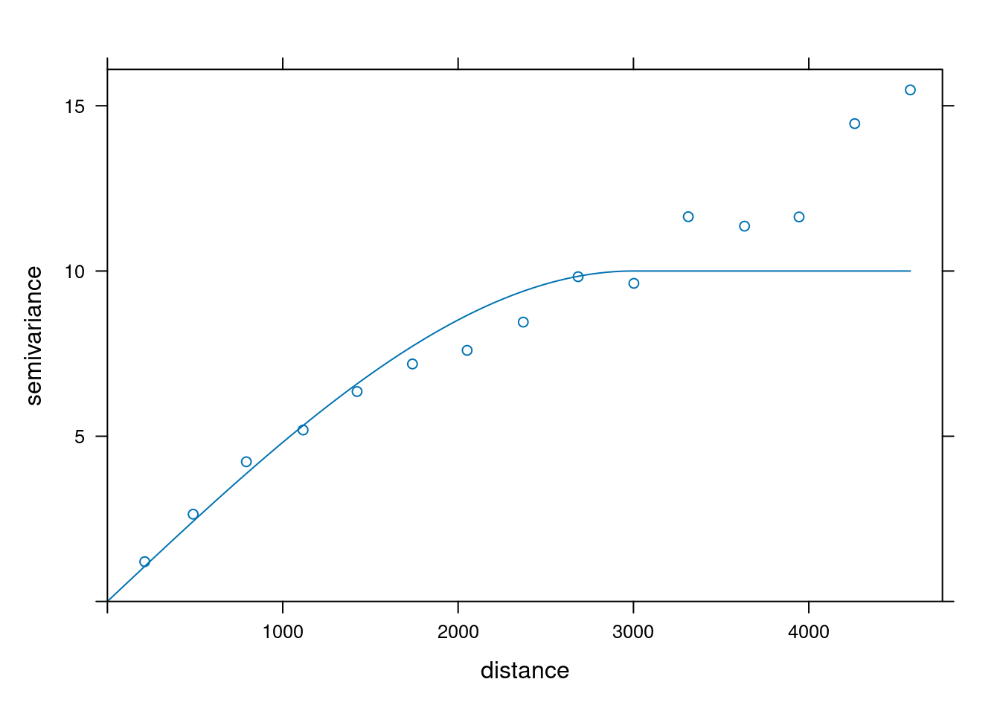
Rycina 7.8: Model sferyczny zmiennej temp.
Dodatkowo możliwe jest także automatyczne dopasowanie modelu w oparciu o wstępnie podane parametry używając funkcji fit.variogram() (rycina 7.9).
fitted_sph = fit.variogram(vario, model_sph)
fitted_sph## model psill range
## 1 Sph 13.20295 4549.691
plot(vario, model = fitted_sph)Rycina 7.9: Automatycznie dopasowany model sferyczny zmiennej temp używając wstępnie podanych parametrów.
W niektórych przypadkach funkcja fit.variogram() da także zadowalające wyniki, gdy tylko zostanie podany typ modelu (rycina 7.10).
model_sph2 = vgm(model = "Sph")
fitted_sph2 = fit.variogram(vario, model_sph2)
fitted_sph2## model psill range
## 1 Sph 13.2018 4549.092
plot(vario, model = fitted_sph2)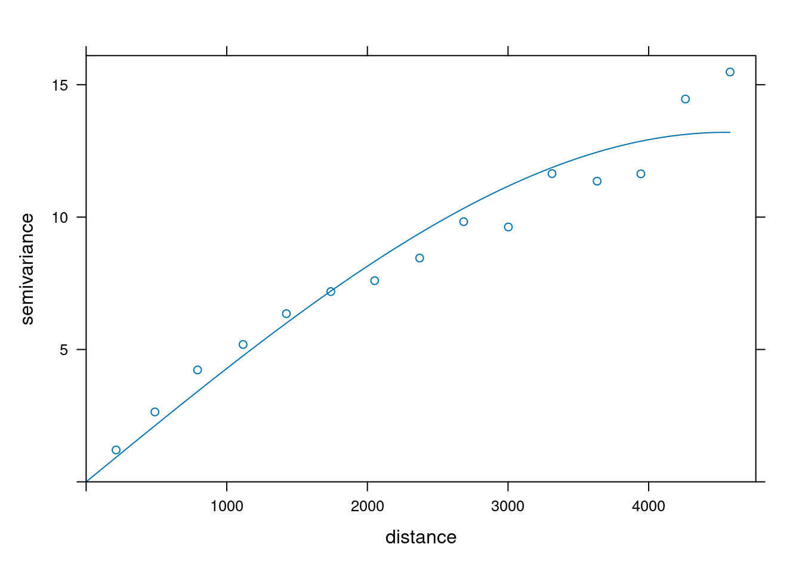
Rycina 7.10: Automatycznie dopasowany model sferyczny zmiennej temp używając jedynie wstępnie podanego typu modelu.
7.4.2 Model wykładniczy
Model wykładniczy (Exp) również jest jednym z najczęściej używanych w geostatystyce.
Od modelu sferycznego różni go szczególnie to, że nie ma on skończonego zasięgu.
W jego przypadku, zamiast zasięgu podaje się tzw. zasięg praktyczny.
Oznacza on odległość na jakiej model osiąga 95% wartości wariancji progowej (rycina 7.11).
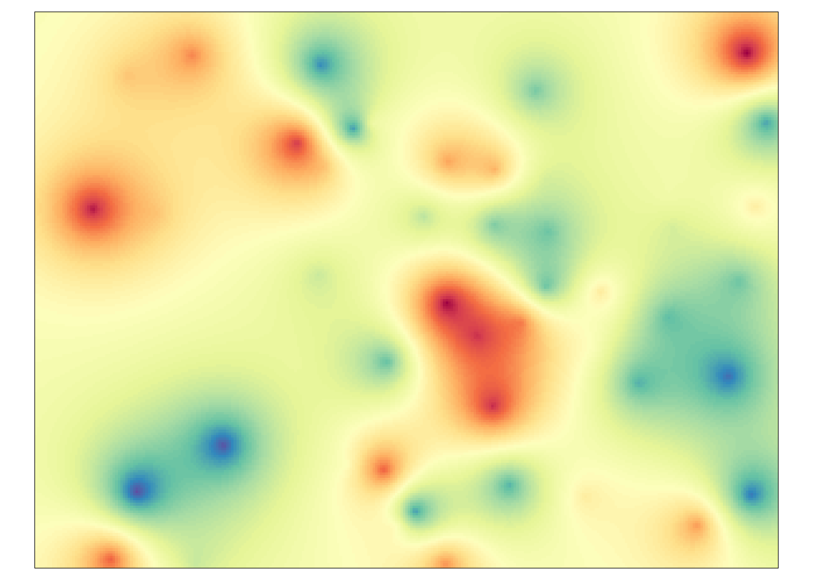
Rycina 7.11: Przykład zjawiska reprezentowanego poprzez model wykładniczy.
Proces tworzenia tego modelu jest bardzo podobny do przedstawionego powyżej - budowany jest semiwariogram empiryczny, a następnie ustalany jest model poprzez podanie kilku jego parametrów (rycina 7.12).
vario = variogram(temp ~ 1, locations = punkty)
# plot(vario)
model_exp = vgm(psill = 10, model = "Exp", range = 3000)
model_exp## model psill range
## 1 Exp 10 3000
plot(vario, model = model_exp)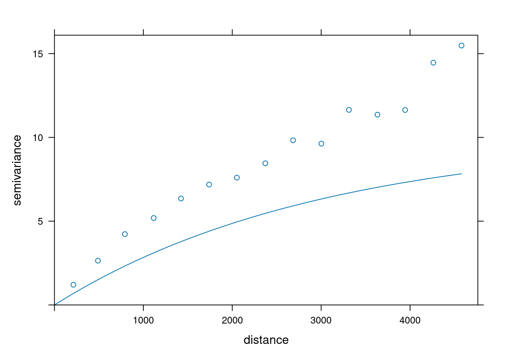
Rycina 7.12: Model wykładniczy zmiennej temp.
Dalej, funkcja fit.variogram() może pomóc w dopasowaniu tego modelu (rycina 7.13).
fitted_exp = fit.variogram(vario, model_exp)
fitted_exp## model psill range
## 1 Exp 17.87051 3298.917
plot(vario, model = fitted_exp)Rycina 7.13: Automatycznie dopasowany model wykładniczy zmiennej temp.
7.4.3 Model gaussowski
Model gaussowski (Gau) również posiada zasięg praktyczny definiowany jako 95% wartości wariancji progowej (rycina 7.14).
Jego cechą charakterystyczną jest paraboliczny kształt na początkowym odcinku.
Jest on najczęściej używany do modelowania cech o regularnej i łagodnej zmienności przestrzennej.
Model gaussowski z uwagi na swoje cechy zazwyczaj nie powinien być stosowany samodzielnie, lecz jako element modelu złożonego.
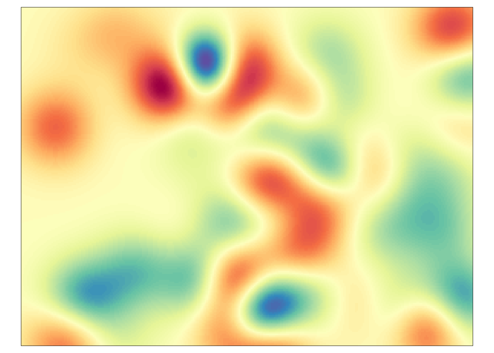
Rycina 7.14: Przykład zjawiska reprezentowanego poprzez model gaussowski.
Zdefiniowanie modelu gaussowskiego odbywa się używając skrótu "Gau" (rycina 7.15).
vario = variogram(temp ~ 1, locations = punkty)
# plot(vario)
model_gau = vgm(psill = 13, model = "Gau", range = 3000)
model_gau## model psill range
## 1 Gau 13 3000
plot(vario, model = model_gau)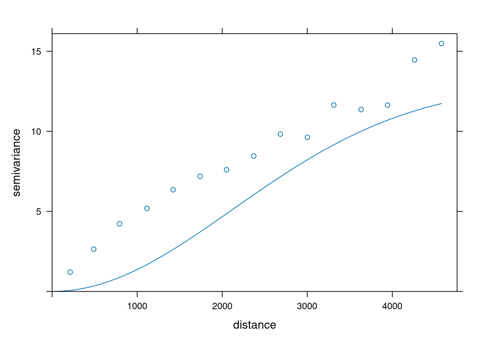
Rycina 7.15: Model gaussowski zmiennej temp.
Dopasowanie tego modelu może również nastąpić używając funkcji fit.variogram() (rycina 7.16).
fitted_gau = fit.variogram(vario, model_gau)
fitted_gau## model psill range
## 1 Gau 8.573835 852.2404
plot(vario, model = fitted_gau)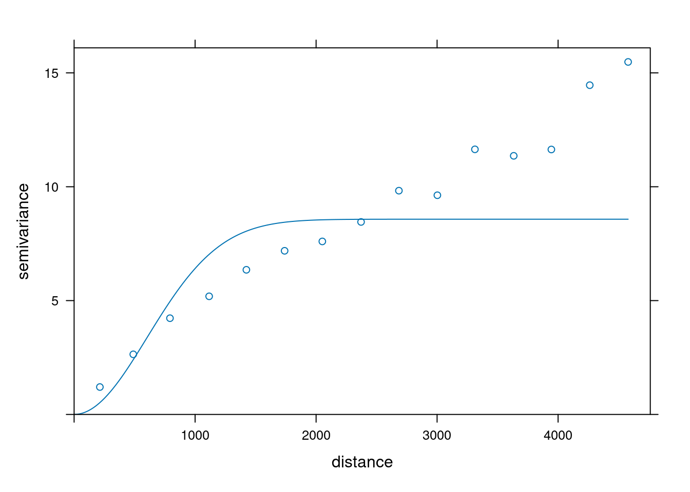
Rycina 7.16: Automatycznie dopasowany model gaussowski zmiennej temp.
7.4.4 Model potęgowy
Model potęgowy (Pow) to przykład tzw. modelu nieograniczonego (rycina 7.17).
Jego wartość rośnie w nieskończoność, dlatego niemożliwe jest określenie jego zasięgu.
W przypadku modelu potęgowego, parametr range oznacza wykładnik potęgowy.
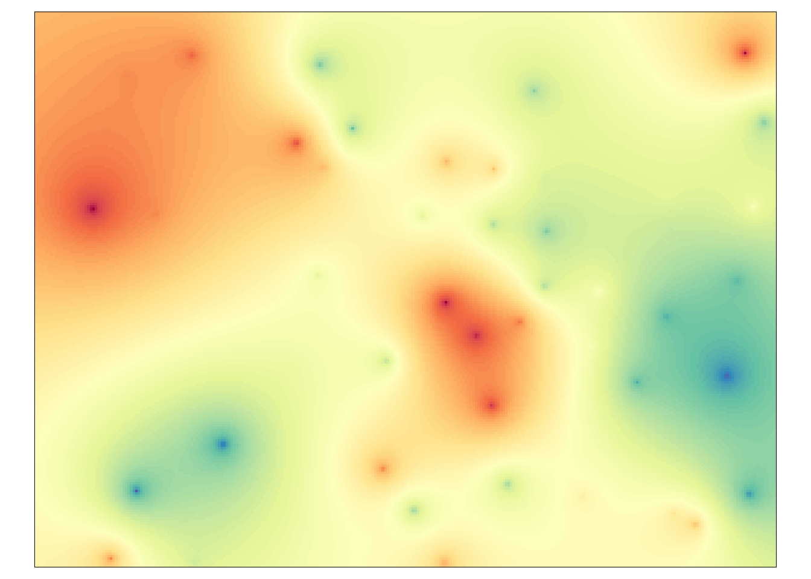
Rycina 7.17: Przykład zjawiska reprezentowanego poprzez model potęgowy.
Model potęgowy jest określany skrótem "Pow" (ryciny 7.18 i 7.19).
vario = variogram(temp ~ 1, locations = punkty)
# plot(vario)
model_pow = vgm(psill = 0.03, model = "Pow", range = 0.7)
model_pow## model psill range
## 1 Pow 0.03 0.7
plot(vario, model = model_pow)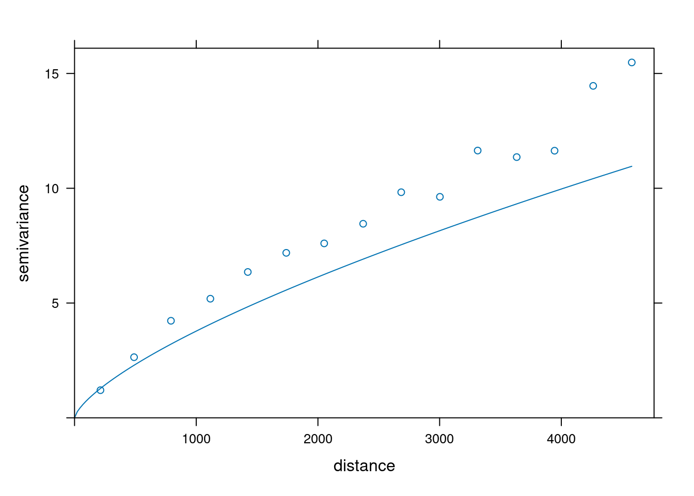
Rycina 7.18: Model potęgowy zmiennej temp.
fitted_pow = fit.variogram(vario, model_pow)
fitted_pow## model psill range
## 1 Pow 0.02515946 0.7535889
plot(vario, model = fitted_pow)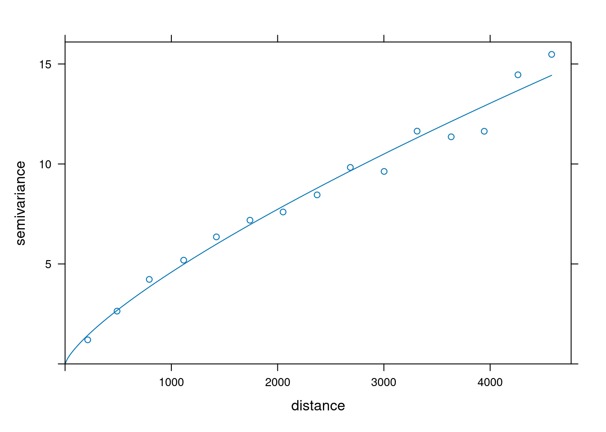
Rycina 7.19: Automatycznie dopasowany model potęgowy zmiennej temp.
7.4.5 Porównanie modeli
Z uwagi na swoją charakterystykę, każdy z powyższych modeli ma inny zakres wartości. Aby porównać te modele należy je przedstawić używając tej samej skali kolorystycznej (7.20).
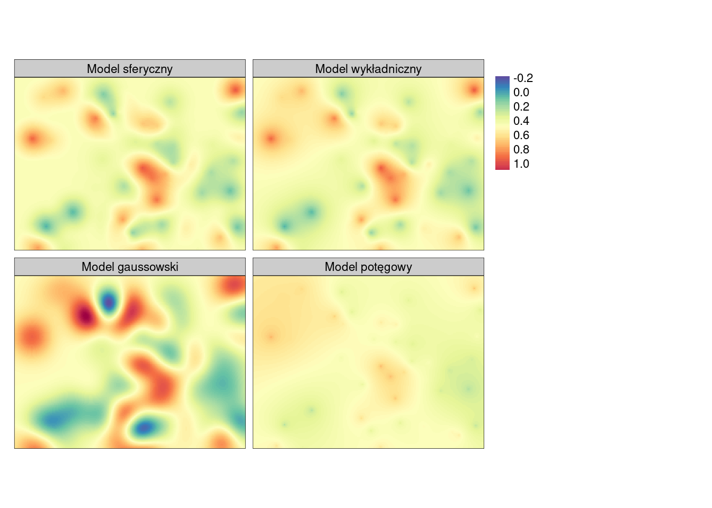
Rycina 7.20: Porównanie powierzchni reprezentowanej przez modele sferyczny, wykładniczy, gaussowski i potęgowy.
7.4.6 Modele złożone I
Najczęściej pojedynczy model nie jest w stanie odwzorować dokładnie zmienności przestrzennej analizowanej cechy.
W takich sytuacjach konieczne jest połączenie dwóch lub więcej modeli podstawowych.
Najbardziej powszechny model złożony składa się z funkcji nuggetowej (dla odległości zero) oraz drugiej funkcji (dla dalszej odległości) (rycina 7.21).
Zdefiniowanie takiej funkcji odbywa się poprzez dodanie argumentu nugget w funkcji vgm().
vario = variogram(temp ~ 1, locations = punkty)
model_zl1 = vgm(psill = 10, model = "Sph", range = 3000,
nugget = 0.5)
model_zl1## model psill range
## 1 Nug 0.5 0
## 2 Sph 10.0 3000
plot(vario, model = model_zl1)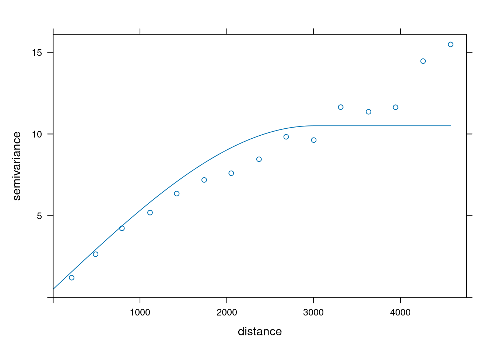
Rycina 7.21: Złożony model zmiennej temp.
Dalsze dopasowanie modeli złożonych również można uzyskać używając funkcji fit.variogram() (rycina 7.22).
fitted_zl1 = fit.variogram(vario, model_zl1)
fitted_zl1## model psill range
## 1 Nug 0.6751142 0.000
## 2 Sph 13.7617233 5511.173
plot(vario, model = fitted_zl1)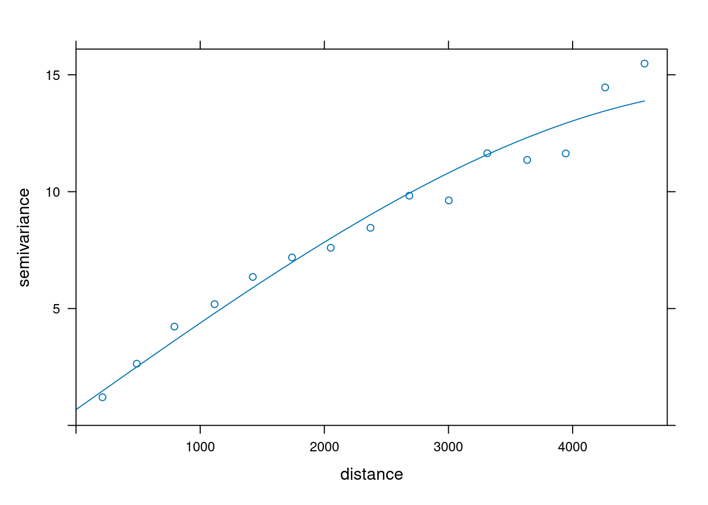
Rycina 7.22: Automatycznie dopasowany złożony model zmiennej temp.
7.4.7 Modele złożone II
Bardziej złożone modele można tworzyć z pomocą argumentu add.to.
Przyjmuje on kolejny obiekt funkcji vgm() i poprzez połączenie tych dwóch obiektów otrzymuje model złożony.
Na poniższym przykładzie stworzony został model złożony składający się z modelu nuggetowego oraz dwóch modeli gaussowskich (ryciny 7.23 i 7.24).
vario = variogram(temp ~ 1, locations = punkty)
model_zl2 = vgm(10, "Gau", 3000,
add.to = vgm(4, model = "Gau",
range = 500, nugget = 0.5))
model_zl2## model psill range
## 1 Nug 0.5 0
## 2 Gau 4.0 500
## 3 Gau 10.0 3000
plot(vario, model = model_zl2)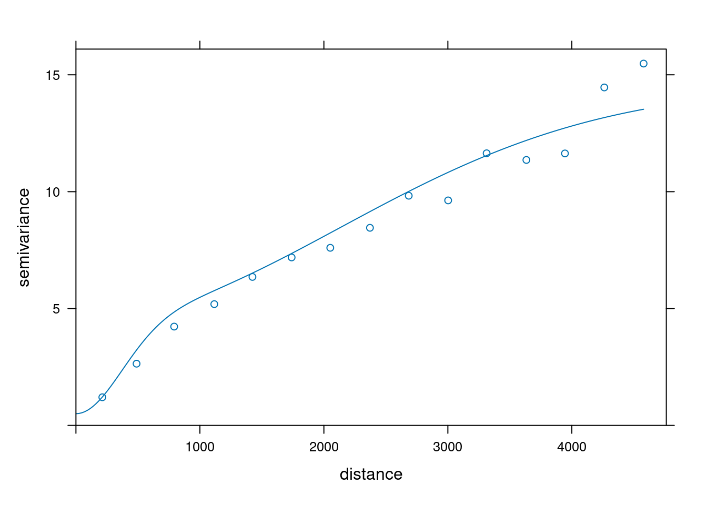
Rycina 7.23: Złożony model zmiennej temp składający się z modelu nuggetowego oraz dwóch modeli gaussowskich.
fitted_zl2 = fit.variogram(vario, model_zl2)
plot(vario, model = fitted_zl2)Rycina 7.24: Automatycznie dopasowany złożony model zmiennej temp składający się z modelu nuggetowego oraz dwóch modeli gaussowskich.
7.5 Modelowanie anizotropowe
7.5.1 Anizotropia
Uwzględnienie anizotropii wymaga zamiany parametru zasięgu na trzy inne parametry (rycina 7.25):
- Kąt określający dominujący kierunek.
- Zasięg w dominującym kierunku.
- Proporcję anizotropii, czyli relację pomiędzy zasięgiem w przeciwległym kierunku do zasięgu w dominującym kierunku.
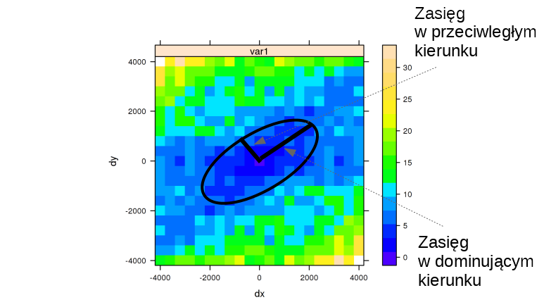
Rycina 7.25: Podstawowe parametry mapy semiwariogramu.
W pakiecie gstat odbywa się to poprzez dodanie argumentu alpha do funkcji variogram().
Należy w niej zdefiniować analizowane kierunki, które zostały określone na podstawie mapy semiwariogramu.
Następnie w funkcji vgm() należy podać nowy argument anis.
Przyjmuje on dwie wartości. Pierwsza z nich (45 w przykładzie poniżej) oznacza dominujący kierunek anizotropii, druga zaś (0.4) mówi o tzw. proporcji anizotropii.
Proporcja anizotropii jest to relacja pomiędzy zmiennością na kierunku prostopadłym a głównym kierunku.
Na poniższym przykładzie zasięg ustalony dla głównego kierunku wynosi 4000 metrów.
Wartość proporcji anizotropii, 0.4, w tym wypadku oznacza że dla prostopadłego kierunku zasięg będzie wynosił 1600 metrów (4000 metrów x 0.4) (rycina 7.26).
vario_map = variogram(temp ~ 1,
locations = punkty,
cutoff = 4000,
width = 400,
map = TRUE)
plot(vario_map, threshold = 30,
col.regions = hcl.colors(40, palette = "ag_GrnYl", rev = TRUE))
Rycina 7.26: Mapa semiwariogramu zmiennej temp.
Anizotropia może być także reprezentowana używając semiwariogramów kierunkowych (rycina 7.27)
vario_kier = variogram(temp ~ 1,
locations = punkty,
alpha = c(0, 45, 90, 135),
cutoff = 4000)
plot(vario_kier)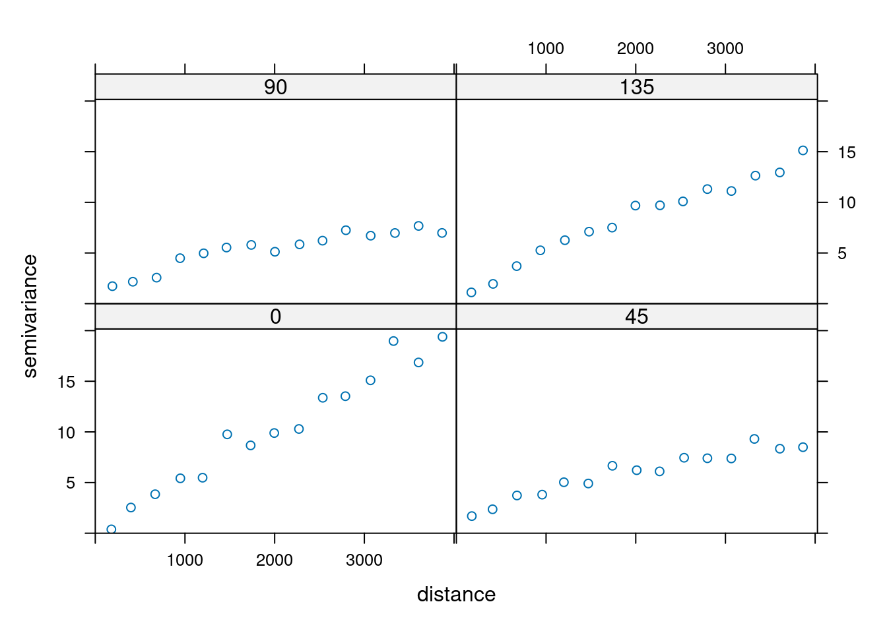
Rycina 7.27: Semiwariogramy kierunkowe zmiennej temp.
Następnie semiwariogramy kierunkowe mogą być modelowane ręcznie (rycina 7.28) lub też używając automatycznego dopasowania (rycina 7.29).
vario_kier_fit = vgm(psill = 8, model = "Sph", range = 4000,
nugget = 0.5, anis = c(45, 0.4))
plot(vario_kier, vario_kier_fit, as.table = TRUE)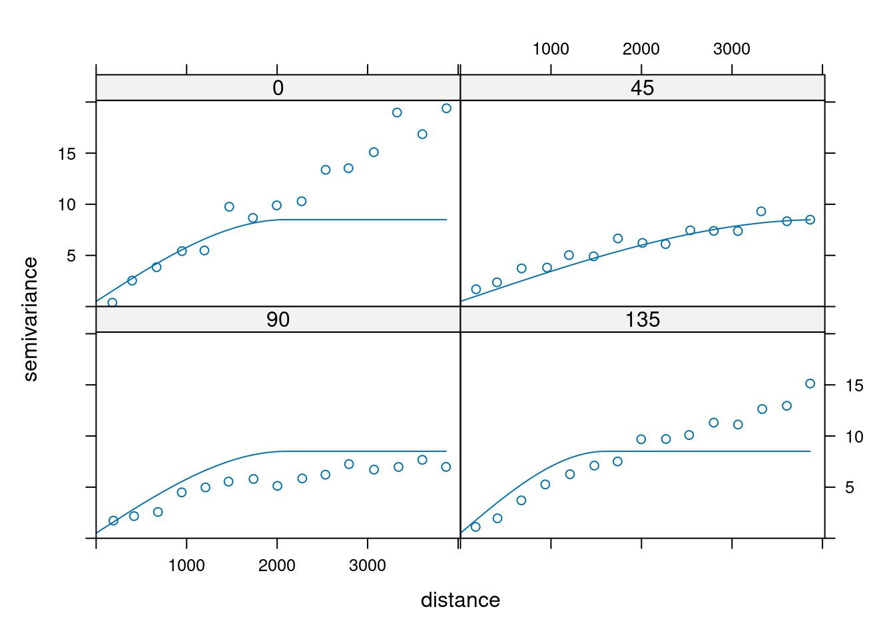
Rycina 7.28: Modele kierunkowe zmiennej temp.
vario_kier_fit2 = fit.variogram(vario_kier,
vgm(model = "Sph",
anis = c(45, 0.4),
nugget = 0.5))
plot(vario_kier, vario_kier_fit2, as.table = TRUE)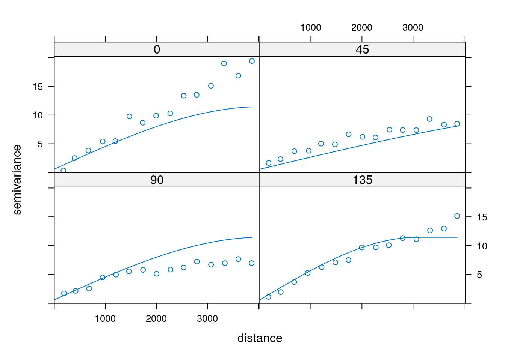
Rycina 7.29: Automatycznie dopasowane modele kierunkowe zmiennej temp.
7.6 Zadania
Przyjrzyj się danym z obiektu punkty_pref. Możesz go wczytać używając poniższego kodu:
data(punkty_pref)- Zbuduj modele semiwariogramu zmiennej
srtmużywając modelu sferycznego używając zarówno ręcznie ustalonych parametrów oraz funkcjifit.variogram(). Porównaj graficznie uzyskane modele. - Zbuduj modele semiwariogramu zmiennej
srtmużywając modelu nuggetowego, sferycznego, wykładniczego, gausowskiego i potęgowego. Porównaj graficznie uzyskane modele. - Stwórz złożony model semiwariogramu zmiennej
srtmużywając modelu nuggetowego i sferycznego. - W oparciu o mapę semiwariogramu, zbuduj semiwariogramy kierunkowe zmiennej
srtmdla kierunków wykazujących anizotropię przestrzenną. Następnie zbuduj modele semiwariogramu dla uzyskanych semiwariogramów kierunkowych. - (Dodatkowe) Spróbuj użyć jednego z modeli podstawowych, który nie był opisywany w tym rozdziale. Czym ten wybrany model się charakteryzuje?